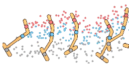

GUIDED DIFFUSION × POLICY EVALUATIONSTITCH-OPE: Trajectory Stitching with Guided Diffusion for Off-Policy Evaluation
STITCH-OPE is a model-based generative framework that leverages denoising diffusion for long-horizon OPE in high-dimensional state and action spaces via trajectory stitching and combination of positive and negative guided diffusion.